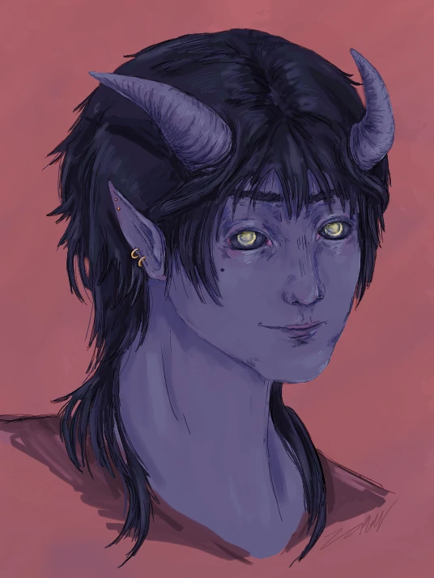

Fearless
When you roll with Fear, you can mark 2 Stress to change it into a roll with Hope instead.

Bard Infernis Slyborne Level 5
Sing us a song of...
When you roll with Fear, you can mark 2 Stress to change it into a roll with Hope instead.
You have advantage on rolls to intimidate hostile creatures.
You have advantage on rolls to negotiate with criminals, detect lies, or find a safe place to hide.
Spend 3 Hope to temporarily Distract a target within Close range, giving them a -2 penalty to their Difficulty.
Once per session, describe how you rally the party and give yourself and each of your allies a Rally Die. At level 1, your Rally Die is a d6. A PC can spend their Rally Die to roll it, adding the result to their action roll, reaction roll, damage roll, or to clear a number of Stress equal to the result. At the end of each session, clear all unspent Rally Dice. At level 5, your Rally Die increases to a d8.
You can play three different types of songs, once each per long rest; describe how you perform for others to gain the listed benefit:
Your rallying songs steel the courage of those who listen. When you give a Rally Die to an ally, they can gain a Hope or clear a Stress.
You are among the greatest of your craft and your skill is boundless. You can perform each of your "Gifted Performer" feature’s songs twice per long rest.
Slumber: Make a Spellcast Roll against a target within Very Close range. On a success, they’re Asleep until they take damage or the GM spends a Fear on their turn to clear this condition.
Arcane Barrage: Once per rest, spend any number of Hope and shoot magical projectiles that strike a target of your choice within Close range. Roll a number of d6s equal to the Hope spent and deal that much magic damage to the target.
Telepathy: Spend a Hope to open a line of mental communication with one target you can see. This connection lasts until your next rest or you cast Telepathy again.
Adjust Appearance: You magically shift your appearance and clothing to avoid recognition.
Parallela: Spend 2 Hope to cast this spell on yourself or an ally within Close range. The next time the target makes an attack, they can hit an additional target within range that their attack roll would succeed against. You can only hold this spell on one creature at a time.
Illusion: Make a Spellcast Roll (14). On a success, create a temporary visual illusion no larger than you within Close range that lasts for as long as you look at it. It holds up to scrutiny until an observer is within Melee range.
Mystic Tether: Make a Spellcast Roll against a target within Far range. On a success, they’re temporarily Restrained and must mark a Stress. If you target a flying creature, this spell grounds and temporarily Restrains them.
Fireball: Make a Spellcast Roll against a target within Very Far range. On a success, hurl a sphere of fire toward them that explodes on impact. The target and all creatures within Very Close range of them must make a Reaction Roll (13). Targets who fail take d20+5 magic damage using your Proficiency. Targets who succeed take half damage.
Levitation: Make a Spellcast Roll to temporarily lift a target you can see up into the air and move them within Close range of their original position.
Recant: Spend a Hope to force a target within Melee range to make a Reaction Roll (15). On a failure, they forget the last minute of your conversation.
Rune Circle: Mark a Stress to create a temporary magical circle on the ground where you stand. All adversaries within Melee range, or who enter Melee range, take 2d12+4 magic damage and are knocked back to Very Close range.
Arcane Deflection: Once per long rest, spend a Hope to negate the damage of an attack targeting you or an ally within Very Close range.
Time Lock: Target an object within Far range. That object stops in time and space exactly where it is until your next rest. If a creature tries to move it, make a Spellcast Roll against them to maintain this spell.
Wall of Flame: Make a Spellcast Roll (15). On a success, create a temporary wall of magical flame between two points within Far range. All creatures in its path must choose a side to be on, and anything that subsequently passes through the wall takes 4d10+3 magic damage.
Spend a Hope to gain advantage on a roll to deceive or trick someone into believing a lie you tell them
You can peek into the minds of others. Spend a Hope to read the vague surface thoughts of a target within Far range. Make a Spellcast Roll against the target to delve for deeper, more hidden thoughts.
On a roll with Fear, the target might, at the GM's discretion, become aware that you're reading their thoughts.
Handfuls 3 · Bags 4
Presence · Melee · 3d8 phy
Quick. When you make an attack, you can mark a Stress to target another creature within range.
Finesse · Melee · 3d8 phy
Paired. Add this Secondary Weapon's tier + 1 to primary weapon damage to targets within Melee range
Strength · Very Close · 3d10+8 phy
Cumbersome. -1 to Finesse
Thresholds 11/24 · Armor Score 5
Heavy. -1 to Evasion
This item represents enough rations to feed a character for a few days. So long as a character has this item on them when they travel, they do not suffer from the effects of hunger or thirst. If a character does not have this item on their person during a long rest taken as part of a travel narrative, they may not take the clear stress downtime action. Generally speaking, a character does not need to carry multiple uses of this item. Each item represents multiple servings of foodstuff. After a long rest, however, a GM may spend a Fear in order to force a character to make an Instinct Roll with a difficulty based on the terrain. On a failure, the character runs out of rations and must consume this item.
Clear 1d4+1 HP.
Soul coins are about 5 inches across and about an inch thick, minted from infernal iron. Each coin weighs one third of a pound, and is inscribed with Infernal writing and a spell that magically binds a single soul to the coin. Because each soul coin has a unique soul trapped within it, each has a story. A creature might have been imprisoned as a result of defaulting on a deal, while another might be the victim of a night hag's curse.
Carrying Soul Coins. To hold a soul coin is to feel the soul bound within it- overcome with rage or fraught with despair. A player character can carry a number of soul coins equal to or less than its highest trait without penalty. A character who carries more soul coins than this limit suffers disadvantage on its duality and reaction rolls.
Using a Soul Coin. A soul coin has 3 charges. A creature carrying the coin can use its action to expend 1 charge from a soul coin and use it to do one of the following:
An infernal war machine's furnace consumes a soul coin instantly, expending all the coin's remaining charges at once and destroying the coin in the process. The soul trapped in the coin becomes trapped in the furnace instead, powering the infernal war machine for a duration determined by how many charges the soul coin had when it was consumed: 1 charge, 24 hours; 2 charges, 48 hours; 3 charges, 72 hours. If it's still trapped in the furnace when this duration ends, the soul is destroyed. Not even divine intervention can restore a soul destroyed in this manner.
Regardless of its size, a furnace can hold any number of souls, their screams of anguish audible out to a Far range. Each new soul fed to the furnace adds more fuel to the vehicle, allowing it to run longer.
Freeing a Soul. Casting a spell that removes a curse on a soul coin frees the soul trapped within it, as does expending all of the coin's charges without draining its essence or using it as fuel. The coin itself rusts from within and is destroyed once the soul is released.
A freed soul travels to the realm of the god it served or the outer plane most closely tied to its alignment (DM's choice). The souls of lawful evil creatures released from soul coins typically emerge from the River Styx as lemure devils.
A soul can also be freed by destroying the coin that contains it. A soul coin has immunity to all damage except that which is dealt by a hellfire weapon (or an infernal war machine's furnace). Freeing a soul from a soul coin is considered a good act, even if the soul belongs to an evil creature.
Hellish Currency. Soul coins are a currency of the Nine Hell s and are highly valued by devils. The coins are used among the infernal hierarchy to barter for favors, bribe the unwilling, and reward the faithful for services rendered.
Soul coins are created by Mammon and his greater devils on Minauros, the third layer of the Nine Hells, in a vast chamber where the captured souls of evil mortals are bound into the coins. These coins are then distributed throughout the Nine Hells to be used for goods and services, infernal deals, dark bargains, and bribes.
As an action, you can splash the contents of this flask onto a creature within very close range. Make an agility attack against a target creature. If the target is a fiend or undead, it takes d12 magic damage, using your proficiency.
You can drink this blood to disappear from where you are and immediately reappear at a point you can see within Very Far range.
Clear 1d4+2 Stress.
Clear 1d4 HP.
You can make a Finesse Roll to throw this shard at a group of adversaries within Far range. Targets you succeed against take 1d20 magic damage.
Eat this root to leap up to Far range once without needing to roll.
Clear 1d4 Stress.
This vial keeps liquid fresh. Whatever is held in it is placed into stasis and retains its potency.
As a downtime move, you can use a vial of blood to craft a Minor Health Potion.
During downtime, you automatically clear a Stress.
Spend a Hope to activate this ring. Your footsteps are silent until your next rest.
Once per long rest, you can open this small box and roll a d12. On a result of 1–6, it’s empty. On a result of 7–10, it contains one random common consumable. On a result of 11–12, it contains two random common consumables.
When you use this key to open a locked door, you gain advantage on the Finesse Roll.
When you would mark your last Stress, roll a d6. On a result of 5 or higher, don't mark it.
Activate this pebble-sized stone to memorize the appearance of someone you can see. Spend a Hope to magically recreate this guise on yourself as an illusion.
Who from your community taught you to have such confidence in yourself?
You were in love once. Who did you adore, and how did they hurt you?
You’ve always looked up to another bard. Who are they, and why do you idolize them?
What made you realize we were going to be such good friends?
What do I do that annoys you?
Why do you grab my hand at night?
An unofficial fan site for a private Daggerheart campaign.